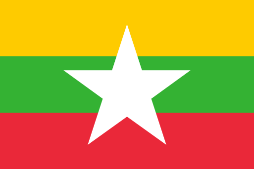

Asia
Con quali paesi confina il Myanmar?
Il Myanmar confina con 5 paesi: Bangladesh, Cina, India, Laos e Thailandia.
Vedi il Myanmar sulla mappa interattiva →
Paesi confinanti del Myanmar
Per numero di paesi confinanti il Myanmar è al 35° posto nel mondo, a pari merito con altri 24 paesi.
Scheda del Myanmar
- Capitale
- Naypyidaw
- Lingue ufficiali
- Birmano
- Valuta
- Kyat (MMK)
- Continente
- Asia
- Superficie
- circa 677.000 km²
- Paesi confinanti
- 5
Altri paesi in Asia
- Afghanistan
- Arabia Saudita
- Armenia
- Azerbaigian
- Bahrein
- Bangladesh
- Bhutan
- Brunei
- Cambogia
- Cina
- Corea del Nord
- Corea del Sud
- Emirati Arabi Uniti
- Filippine
- Georgia
- Giappone
- Giordania
- India
- Indonesia
- Iran
- Iraq
- Israele
- Kazakistan
- Kirghizistan
- Kuwait
- Laos
- Libano
- Malaysia
- Maldive
- Mongolia
- Nepal
- Oman
- Pakistan
- Palestina
- Qatar
- Singapore
- Siria
- Sri Lanka
- Tagikistan
- Taiwan
- Thailandia
- Timor Est
- Turchia
- Turkmenistan
- Uzbekistan
- Vietnam
- Yemen